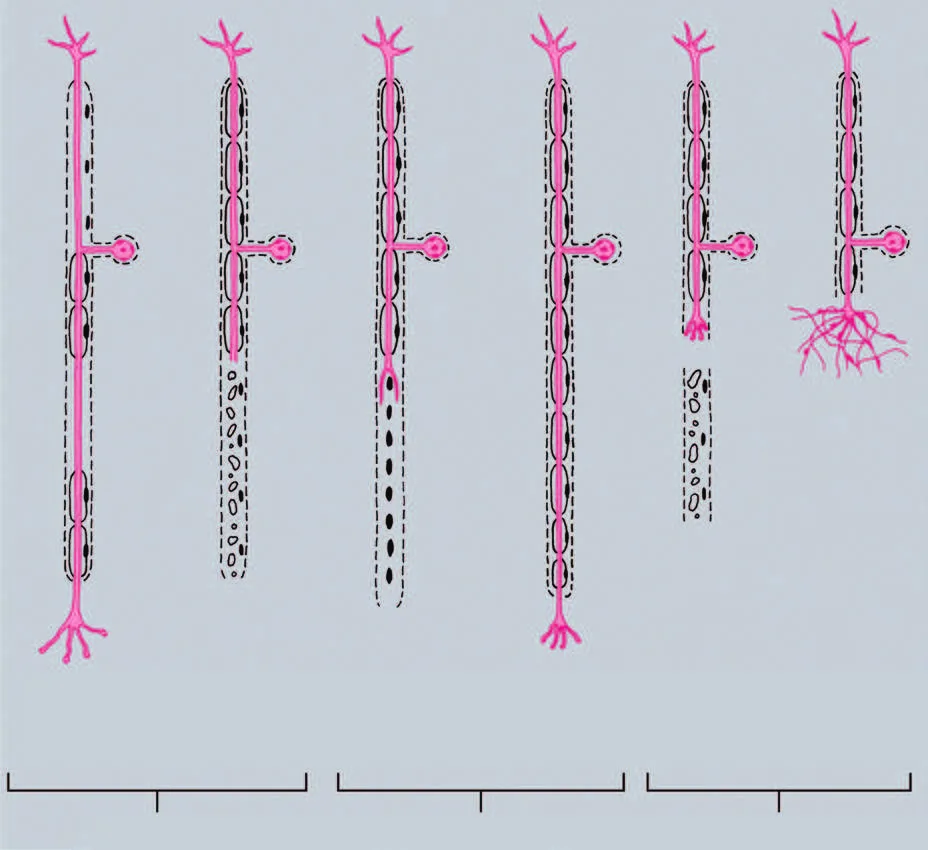
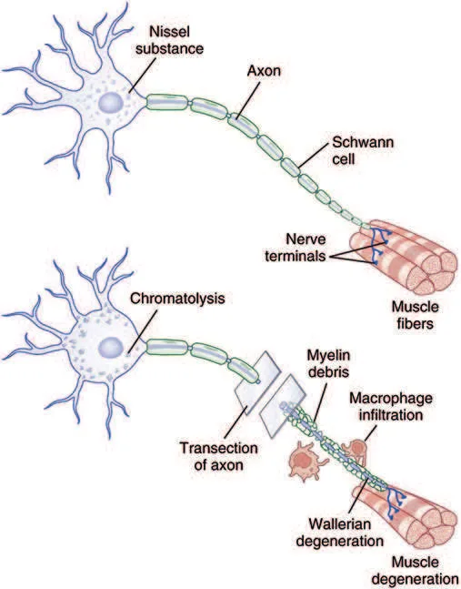

نسخه استخراجشده؛ ترجمه یا تأیید علمی انجام نشده است. وضعیت: captured
دو طبقهبندی برای آسیب عصبی بهطور گسترده پذیرفته شدهاند، و هر دو بر پایهی نوع مورفوفیزیولوژیک آسیب ساخته شدهاند — یعنی بر پایهی سیر زمانی و میزان بازیابی حسی.
این نکته را نگه دار: طبقهبندی، پیشبینی است. وقتی نوع آسیب را نام میبری، داری دربارهی احتمال و زمان بهبود حرف میزنی.
۱. نوروپراکسی (آسیب درجهی یک). با بلوک هدایتی مشخص میشود، بدون دژنراسیون آکسون و بدون آسیب قابلمشاهدهی اپینوریوم. یعنی سیم قطع نشده؛ فقط پیام رد نمیشود. حس و عملکرد معمولاً ظرف چند ساعت تا چند هفته برمیگردد.
در ایمپلنتولوژی، نوروپراکسی از چند مسیر میآید که همهشان فشار یا کششاند:
• نزدیک شدن به عصب آلوئولار تحتانی بدون تماس واقعی — آسیب فشاری بدون لمس.
• رتراکشن بیشازحد که آسیب کششی میسازد.
• گیر افتادن شاخههای عصب منتال در نخ بخیه.
• تروما به شاخههای عصب اینفرااوربیتال که معمولاً از رتراکشن میآید.
۲. آکسونوتمزیس (آسیب درجهی دو، سه یا چهار). شامل آسیبهای آکسونی از نوع دژنراسیون یا رژنراسیون است. اینجا آکسون آسیب دیده ولی چارچوب بافتی تا حدی باقی است. بهبود معمولاً ظرف حدود ۲ تا ۴ ماه دیده میشود و بازیابی کامل اغلب ظرف ۱۲ ماه.
۳. نوروتمزیس (آسیب درجهی پنج). شدیدترین نوع، ناشی از کشش شدید، فشردگی شدید، یا قطع کامل. آکسون و بافت همبند دربرگیرندهاش پیوستگی خود را از دست میدهند.
و پیشآگهیاش روشن است: احتمال بازیابی حسی بسیار پایین و ارجاع فوری برای ارزیابی نوروسرجری توصیه میشود.
یک مسیر بالینی که به نوروتمزیس میرسد: برشهای نابهجا روی شاخههای عصب منتال میتوانند آسیب از نوع نوروتمزیس (قطع) بسازند — پس شناخت موقعیت سه شاخهی عصب منتال ضروری است.
و توالی بالینی بازیابی در آکسونوتمزیس: در ابتدا بیحسی کامل شایعترین حالت است، و سپس با شروع بهبود، پارستزی جای آن را میگیرد. یعنی پارستزی نشانهی بدتر شدن نیست؛ نشانهی حرکت است.

این بخش را مثل یک تقویم بحران بخوان. هر عدد یک در را میبندد.
• بیش از ۶ ساعت تروما → آتروفی فیبر عصبی نشان داده شده است.
• پس از ۳ ماه → تغییرات دائمی مرکزی و محیطی رخ میدهد که پاسخ عصب به مداخلهی جراحی را بعید میکند.
• آسیبهای قدیمیتر از ۶ ماه → بهندرت به هر درمانی پاسخ میدهند و معمولاً دائمیاند.
سه عدد، سه پیام: در ساعتهای اول اقدام کن، در سه ماه اول تصمیم بگیر، و پس از شش ماه انتظار معجزه نداشته باش.
دو فاز ترمیم عصب: پس از آسیب عصبی دو فاز وجود دارد — دژنراسیون و رژنراسیون. این توالی توضیح میدهد چرا وضعیت بیمار در هفتههای اول ممکن است بدتر بهنظر برسد پیش از آنکه بهتر شود.
آمار بازیابی — و اینکه چقدر خوشبین باشی:
• در آسیبهای ناشی از بلوک عصب: بیشتر بیماران کاملاً بهبود مییابند؛ بهبود کامل در ۸۵ درصد بیماران با فروکش کامل ظرف ۸ تا ۱۰ هفته.
• آسیب دائمی در حدود ۱ مورد از هر ۲۵٬۰۰۰ بلوک عصب آلوئولار تحتانی رخ میدهد — هرچند بروز واقعی بهسختی قابل کمّیسازی است.
• در آکسونوتمزیس، بهبود ظرف حدود ۲ تا ۴ ماه و بازیابی کامل معمولاً ظرف ۱۲ ماه رخ میدهد.
یک مکانیسم که اغلب فراموش میشود — هماتوم. تجمع خون میتواند به فیبروز و تشکیل اسکار بینجامد که خودش ترومای فشاری میسازد. و میزان آسیب مستقیماً با مقدار فشاری که هماتوم وارد میکند و با زمان بازیابی آسیب آکسونی و بافت همبندی نسبت دارد.
یعنی خونریزی نزدیک کانال، فقط یک مسئلهی خونریزی نیست؛ یک مسئلهی عصبی تأخیری هم هست.
و یک مکانیسم دیگر: قرار گرفتن ایمپلنت بیشازحد نزدیک به کانال میتواند باعث خونریزی یا رسوب دبری داخل کانال شود که به ایسکمی عصب میانجامد — و حتی با فاصلهی ایدهآل بیش از ۲ میلیمتر، فشرده شدن استخوان به سقف کانال میتواند با تأخیر (گاهی پس از سالها) کانال را باریک کند و فیبرهای عصبی را تحت فشار بگذارد.
